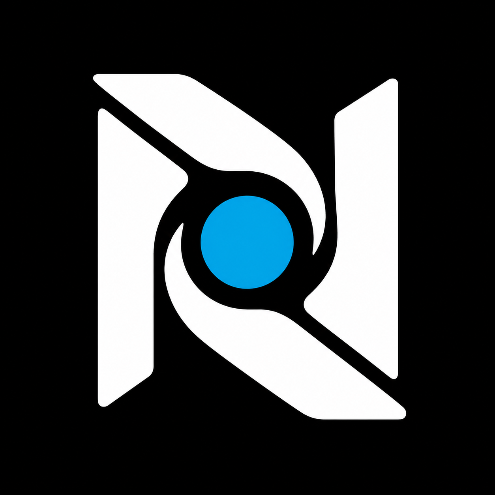
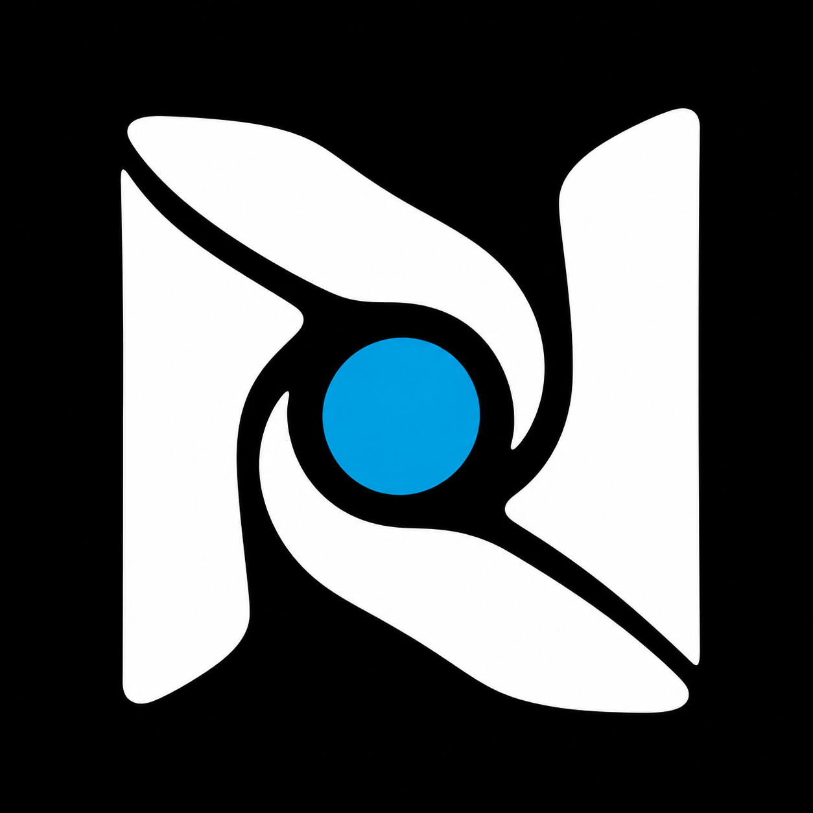
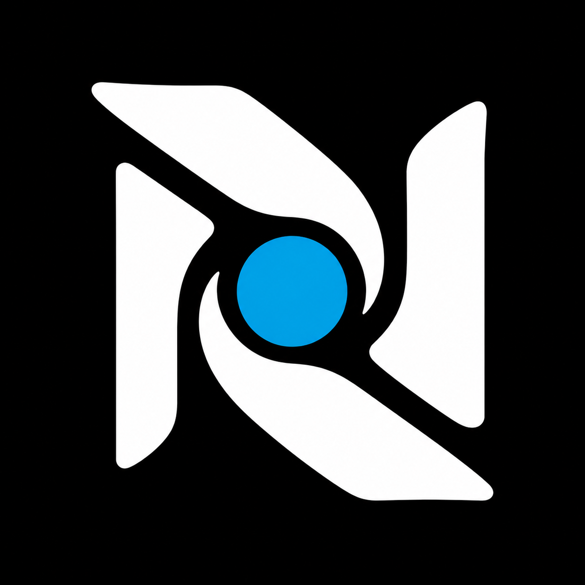
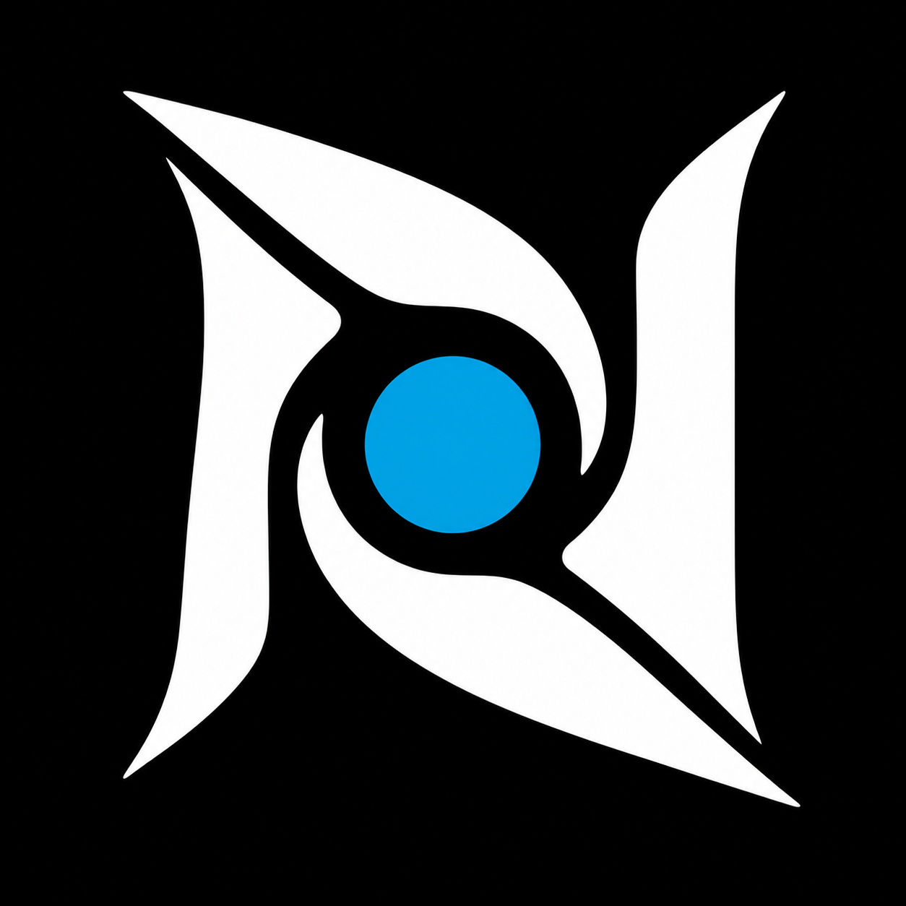

NEXUSPOINT / LOGO REFINEMENTS
Wrapped Nexus, opened up.
Same N, centre point and wordmark. Four ways to soften the boxed outline.
CURRENT LOGO / REFERENCE

01 / Open Wrap


Closest to the current logo. Slimmer sides, angled ends, more breathing room.
02 / Soft Fold

Rounded shoulders and flowing folds soften the outer silhouette.
03 / Split Flow

Shorter side strokes and wider seams give the wrap a more open shape.
04 / Tapered Nexus

Swept, pointed ends create a sharper sense of movement toward the centre.
Concept previews. Existing wordmark outlines preserved. Headings use your actual Conthrax font.